Colossal Statue of Amenhotep III and Tiye
The colossal family group statue of Amenhotep III and Queen Tiye. Featuring the royal couple and their three daughters, it stands as the largest group sculpture ever created."
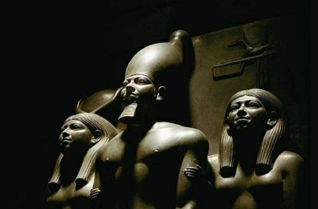
Group Statue of King Menkaure
A schist group statue of King Menkaure. This group statue depicts King Menkaure standing, flanked on both sides by two women: the goddess Hathor to the King’s right, and the lady of the Bat Nome to the King’s left.
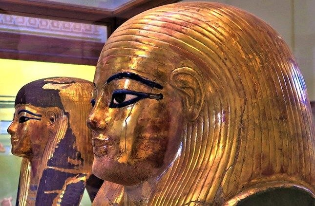
The Masks of Yuya and Tuya
The mummies of Yuya and Tuya were discovered wearing gold-leaf cartonnage masks. As the parents of Queen Tiye, they held high status; Yuya was a prominent priest and landowner from Akhmim, while Tuya held distinguished religious and royal titles.
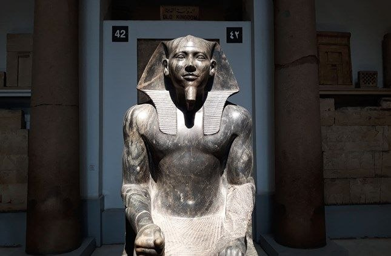
The Statue of Khafre
Found in his Valley Temple, this statue depicts King Khafre (builder of Giza's second pyramid) seated on his throne. It features the Sema Tawy symbol of Egyptian unification and the falcon god Horus, who spreads his wings to provide the King with divine protection.
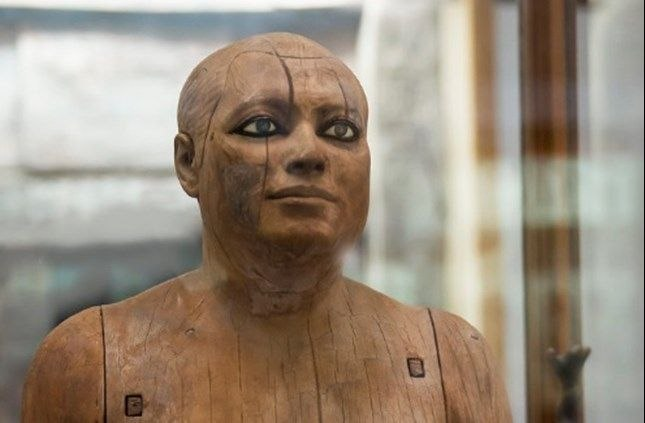
Ka-aper: The Sheikh el-Beled
The Ka-aper, also known as 'Sheikh el-Beled,' is a rare wooden masterpiece from the Old Kingdom celebrated for its remarkable realism. It features stunning inlaid eyes and a confident walking pose, perfectly capturing the artistic excellence and lifelike style of its era.
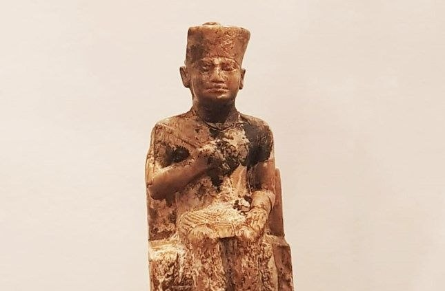
The Statue of Khufu
The Statue of Khufu is the only confirmed three-dimensional portrait of the Great Pyramid's builder. Standing at just 7.5 cm tall, this significant ivory statuette was discovered by Flinders Petrie, who successfully recovered the monarch's missing head after a meticulous search.
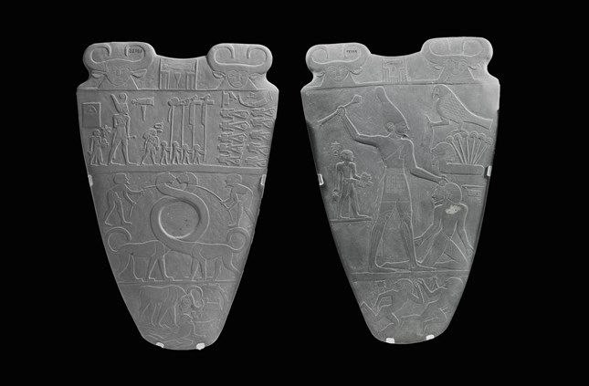
Narmer Palette
The Narmer Palette records the unification of Egypt under King Narmer, serving as a definitive symbol of pharaonic authority. It depicts the King wearing the Red and White Crowns across both sides, featuring victory processions and the legendary "smiting" scene to represent his triumph and the establishment of a unified state
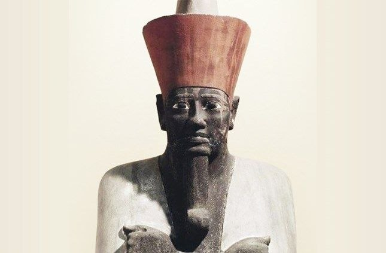
Mentuhotep II: The Founder of the Middle Kingdom
The iconic statue of Mentuhotep II commemorates the 11th Dynasty king who reunified Egypt to found the Middle Kingdom. Discovered by Howard Carter, it depicts the monarch in a divine "Osiride" pose with black skin symbolizing rebirth, wearing the Red Crown and a ceremonial Jubilee robe to mark his long and successful reign
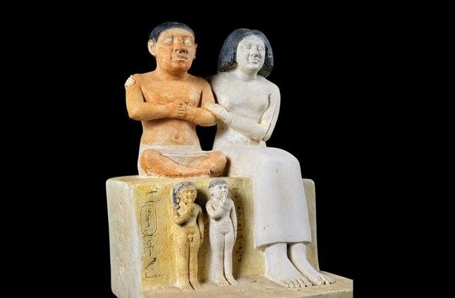
Seneb and His Family
The family portrait of Seneb, a high-ranking priest and royal treasury official, is an Old Kingdom masterpiece celebrated for its warm depiction of family affection. It features an innovative artistic composition that places Seneb’s children at his feet to balance the height of his wife, cleverly accommodating his dwarfism while maintaining a harmonious and prestigious representation of his family.
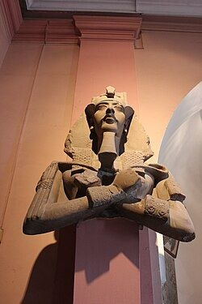
Akhenaten (The Living Spirit of Aten)
Akhenaten, originally Amenhotep IV, was an 18th Dynasty pharaoh who revolutionized Egyptian religion by replacing traditional polytheism with the worship of Aten. During his 17-year reign, he elevated the sun disk to a supreme solar divinity, establishing one of the earliest known forms of monotheism.
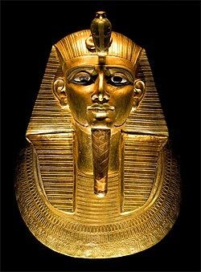
Psusennes I
Psusennes I, the third king of the 21st Dynasty, ruled from Tanis and was a strong defender of Egypt’s borders. Famous for his intact royal tomb and stunning silver coffin, he earned the nickname "The Silver Pharaoh" due to the incredible treasures discovered within. He also built grand palaces and a temple dedicated to the Theban Triad.
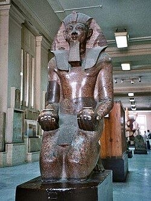
Thutmose III (Thutmose the Great)
Thutmose III (1479–1425 BC) was the pharaoh of the 18th Dynasty of Ancient Egypt. He is widely regarded as one of the greatest warriors, military leaders, and strategists in history. Known as Egypt's first "Warrior Pharaoh," he was the most prominent conqueror of the New Kingdom era, expanding the empire to its greatest territorial extent through brilliant military campaigns.
| Category | Egyptian | Foreigner |
|---|---|---|
| Adults | 100 L.E | 400 L.E |
| Student | 80 L.E | 350 L.E |